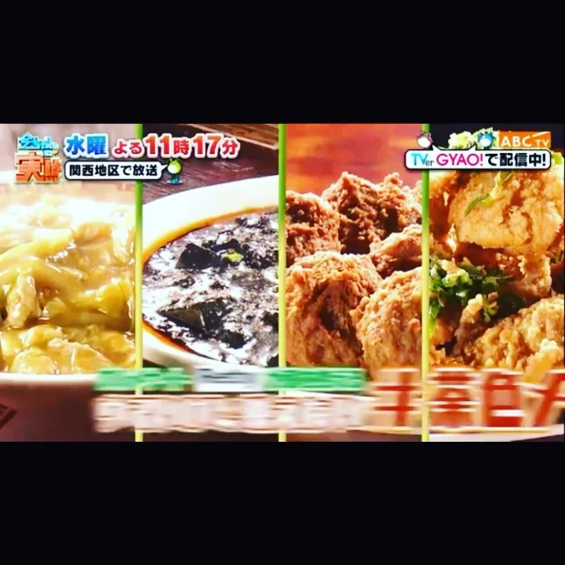

2021年1月11日
ほらな！

ほらな！ そや、オモたわ！ テレビ出るのに、出た次の日から緊急事態宣言や！ 知っててん！いつもや！ パチンコで新台打ってもいつも俺だけ出えへんし、 遅刻しそうな時にチャリパンクするし、 貰い事故4回するし、 ビーチバレーして足骨折するし、 今回もオモた通りや。 でもええんや！ こんな事態やし、しゃーないんや！ テレビ見て、有馬を忘れへんといてくれたらええんや！ ド緊張してる僕を見てワロてくれたらええんや！ また、世の中が戻ったら来てくれたら、、ええんや！ ええんや！！！ 一応、緊急事態宣言中でも時間を守って営業はしようと思ってます！ よろしくお願いします！ #今ちゃんの実は#緊急事態宣言#茶色めし#大阪グルメ#中華バル#中華#中華料理#福島区グルメ#路地裏#B級グルメ#中国#チャイニーズ#路地裏チャイニーズ有馬#有馬#シュウマイ#餃子#点心#フォローミー#followme#パクチー